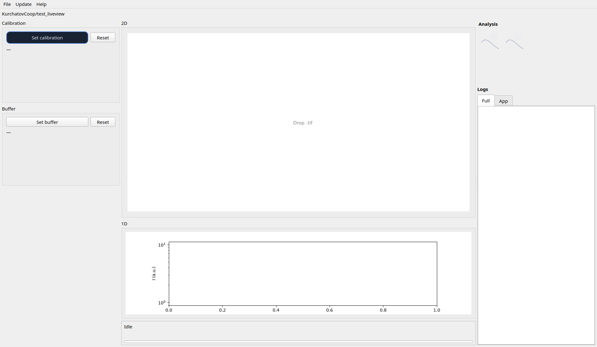
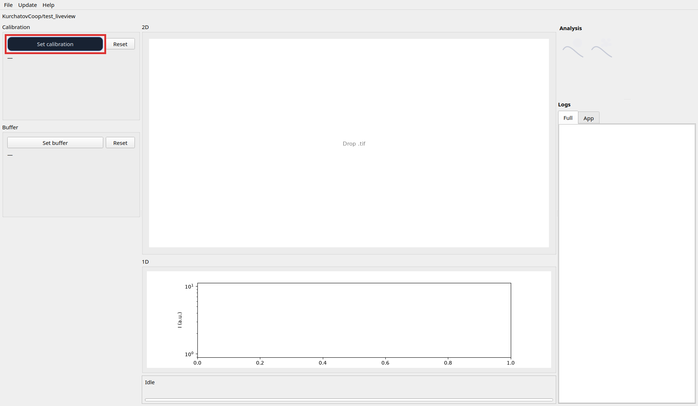
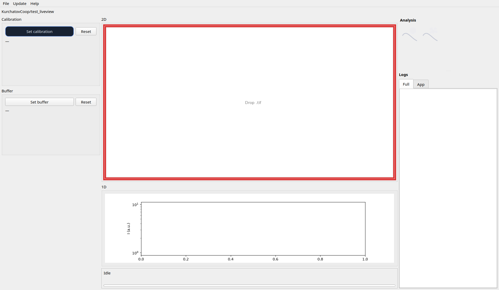
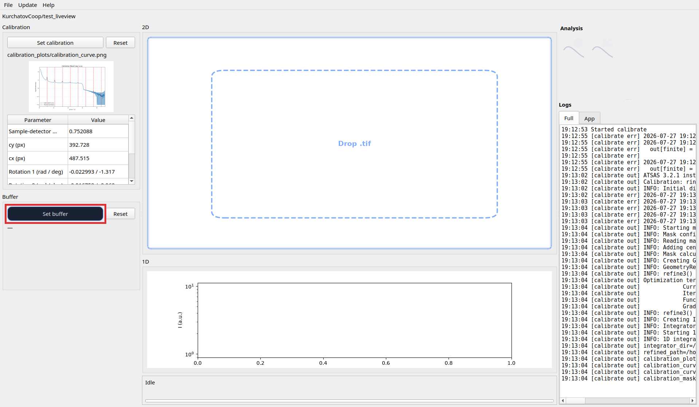
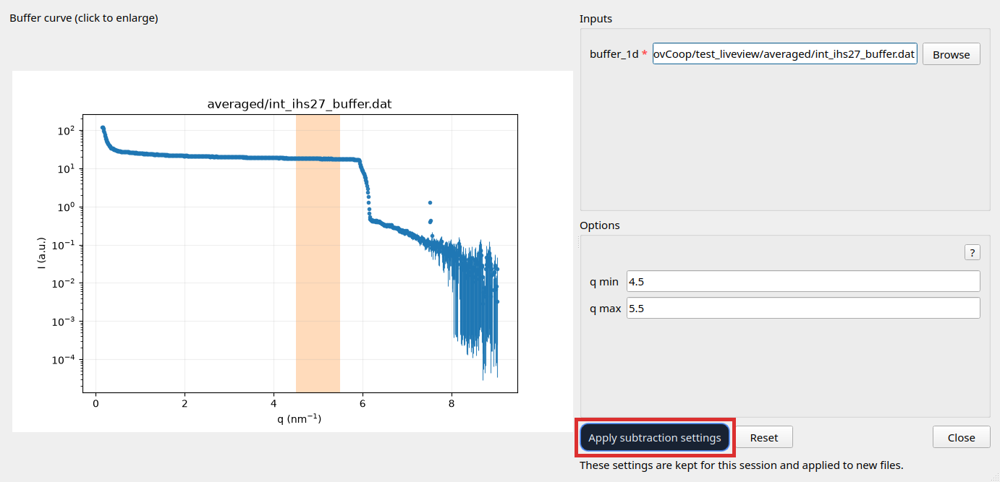
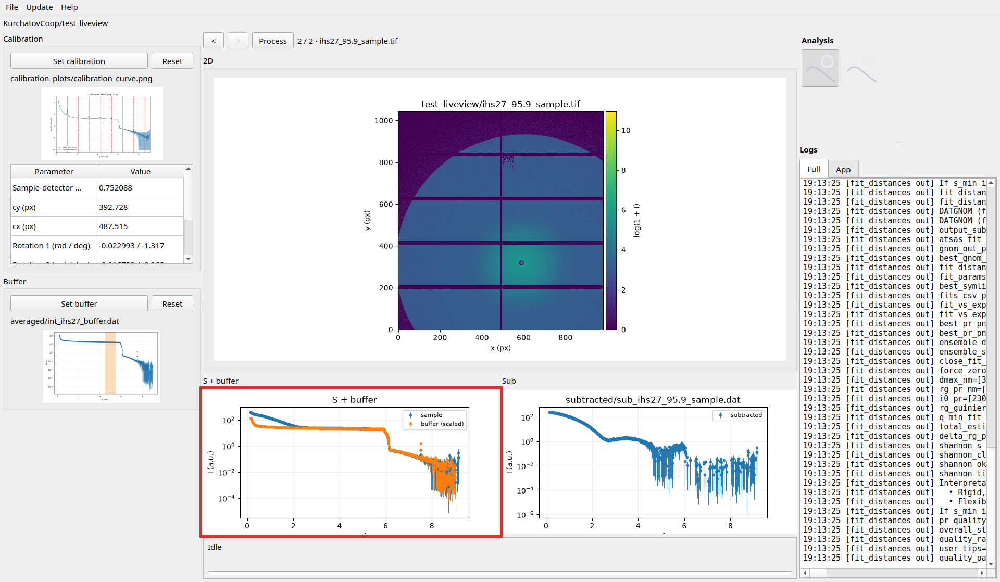
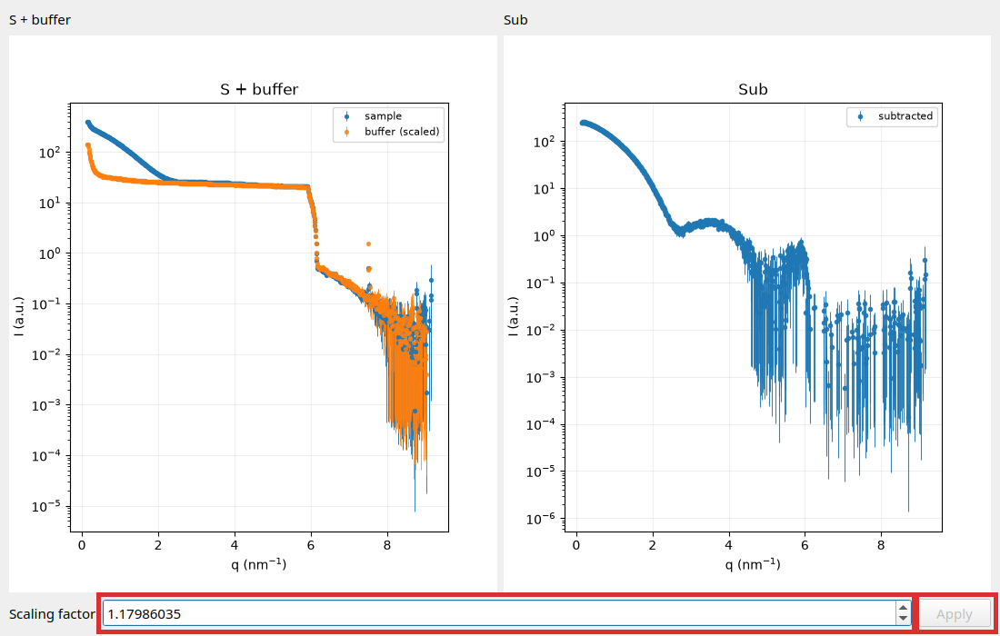
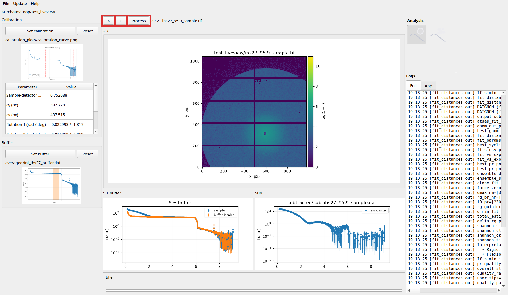
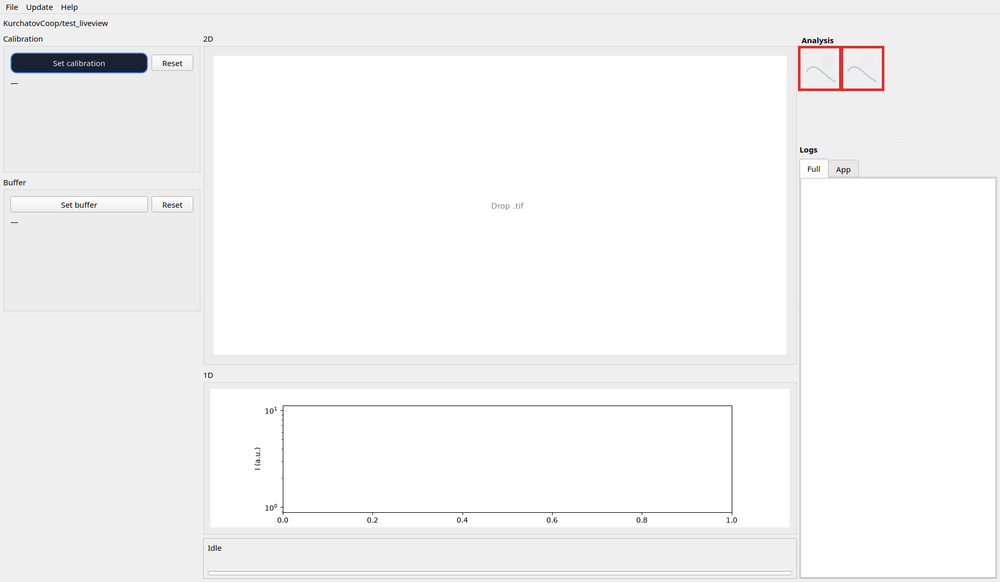

guisaxs-liveview is a three-column desktop app that watches a working directory for new
.tif / .tiff detector frames, queues them, and runs them through calibration,
integration, optional buffer subtraction, and optional analysis. The middle column is the live stage
(queue, 2D drop target, 1D / subtraction plots, session history). The left column holds setup wizards
(calibration and buffer). The right column opens analysis windows and shows the live log.
For how the pieces fit together (working directory, queue, auto vs manual, TIFF revision), see Concepts.
Typical session workflow:

Set calibration (left) → wizard opens → set calibrant / mask / options → Run → wait for Idle → Close. Details: Calibration (mask editing: Mask).

Drop .tif / .tiff onto the middle 2D panel (Drop .tif), or copy files
into the working directory after the app has started. See also
Concepts (feeding / queue / revision).

Integrate a buffer frame first (drop a buffer TIFF and wait for
averaged/int_<stem>.dat). Then:
Set buffer (left) → wizard opens → choose buffer_1d .dat → set q min /
q max (matching window for auto-scale) → Apply subtraction settings → Close.
Settings stay in the session and apply to new samples. Outputs go under subtracted/.


After buffer is configured and a sample has been subtracted (middle shows S + buffer / Sub): click the S + buffer plot → Subtraction wizard opens → change Scaling factor → Apply (rewrites the subtracted curve and may re-run analysis) → close the wizard.


Use history < / > to step through session files. Process re-enqueues the selected file through the live pipeline (same as a new upload).

Right column → click the monodisperse or polydisperse icon → window opens and that chain is armed for new TIFFs while it stays open. Closing the window disarms that chain.
